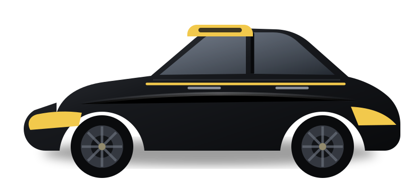
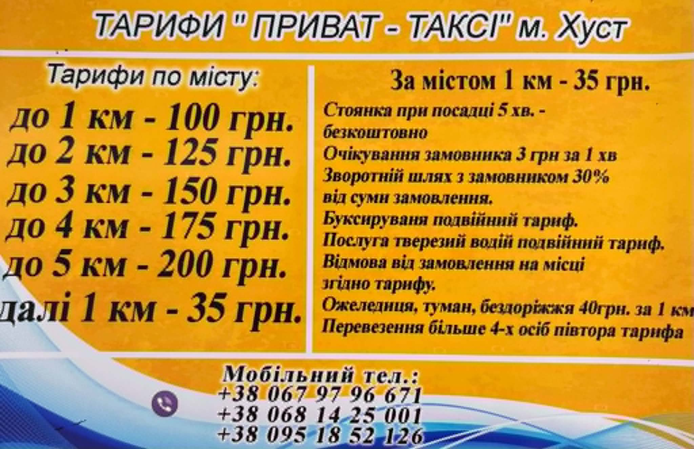

Таксі по Хусту
Таксі по Хусту швидко та зручно
Замовляйте автомобіль для поїздок на роботу, додому, до автовокзалу, лікарні, ринку або за будь-якою адресою в межах Хуста. У команді 20 водіїв.
✓ Щодня з 06:00 до 00:00
✓ 5 хв очікування безкоштовно
✓ 20 водіїв у команді
Виїзд
Хуст

Наші послуги
Послуги таксі у Хусті
Основна послуга — щоденні поїздки по місту. Також доступні міжміські замовлення та доставлення речей.
Популярно
Таксі по місту
Поїздки за будь-якою адресою в Хусті: додому, на роботу, до автовокзалу, ринку, лікарні або магазину.
Міжміське таксі
Поїздки з Хуста до інших населених пунктів за попередньою домовленістю.
Доставлення речей
Можливе доставлення документів, покупок, невеликих посилок та особистих речей по Хусту.
Основна послуга
Таксі по Хусту щодня
Замовляйте машину для звичайних міських поїздок. Водій забере вас за погодженою адресою та довезе до потрібного місця в межах Хуста.
ДімРобота
АвтовокзалВаша адреса
ЦентрЖитловий район
РинокДодому
ЛікарняВаша адреса
Будь-яка адресаПо Хусту
Тарифи
Тарифи на таксі по Хусту
Міська поїздка коштує від 100 грн залежно від відстані. Перші 5 хвилин очікування після подачі автомобіля — безкоштовно.

Чому обирають нас
Зручне таксі для щоденних поїздок по Хусту
5 хвилин безкоштовного очікування
Після прибуття автомобіля перші 5 хвилин очікування не оплачуються.
Подача за вашою адресою
Водій забере вас у погодженому місці в Хусті та довезе до потрібної адреси.
20 водіїв у команді
Замовлення приймають водії, які працюють по місту та знають Хуст.
Просте замовлення телефоном
Назвіть адресу подачі та місце призначення — цього достатньо для міської поїздки.
Викликати таксі
Потрібна машина по Хусту?
Зателефонуйте, назвіть адресу подачі та місце призначення. Для міської поїздки складне бронювання не потрібне.
Телефони для замовлення
Графік роботи
Щодня 06:00–00:00